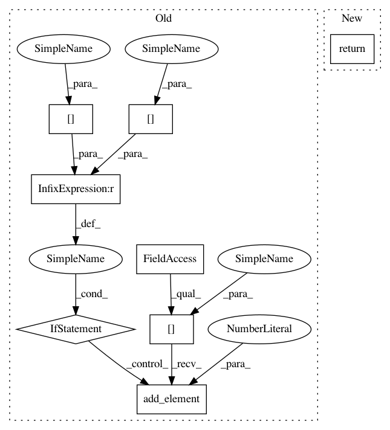

7c1fc4ac3e16970d4ce0ae6ab4294932c8773d11,src/skmultiflow/meta/online_under_over_bagging.py,OnlineUnderOverBagging,partial_fit,#OnlineUnderOverBagging#Any#Any#Any#Any#,101
Before Change
error_estimation = self.adwin_ensemble[i].estimation
for j in range(r):
if pred[j] is not None:
if pred[j] == y[j]:
self.adwin_ensemble[i].add_element(1)
else:
self.adwin_ensemble[i].add_element(0)
if self.adwin_ensemble[i].detected_change():
if self.adwin_ensemble[i].estimation > error_estimation:
change_detected = True
except ValueError:
After Change
self.ensemble[i_max].reset()
self.adwin_ensemble[i_max] = ADWIN()
return self
def __adjust_ensemble_size(self):
if len(self.classes) != len(self.ensemble):
if len(self.classes) > len(self.ensemble):
In pattern: SUPERPATTERN
Frequency: 5
Non-data size: 8
Instances
Project Name: scikit-multiflow/scikit-multiflow
Commit Name: 7c1fc4ac3e16970d4ce0ae6ab4294932c8773d11
Time: 2019-05-08
Author: jacob.montiel@gmail.com
File Name: src/skmultiflow/meta/online_under_over_bagging.py
Class Name: OnlineUnderOverBagging
Method Name: partial_fit
Project Name: scikit-multiflow/scikit-multiflow
Commit Name: 2cf2308e469d6ebcdc268abb62d29267f196535f
Time: 2019-05-08
Author: jacob.montiel@gmail.com
File Name: src/skmultiflow/meta/online_csb2.py
Class Name: OnlineCSB2
Method Name: partial_fit
Project Name: scikit-multiflow/scikit-multiflow
Commit Name: 7c1fc4ac3e16970d4ce0ae6ab4294932c8773d11
Time: 2019-05-08
Author: jacob.montiel@gmail.com
File Name: src/skmultiflow/meta/online_under_over_bagging.py
Class Name: OnlineUnderOverBagging
Method Name: partial_fit
Project Name: scikit-multiflow/scikit-multiflow
Commit Name: 07344fd5427746c410120577b46fef7d48ca1947
Time: 2019-05-08
Author: jacob.montiel@gmail.com
File Name: src/skmultiflow/meta/online_rus_boost.py
Class Name: OnlineRUSBoost
Method Name: partial_fit
Project Name: scikit-multiflow/scikit-multiflow
Commit Name: 38baef676614f45a5bafc8314213e7f2748f10d4
Time: 2019-05-08
Author: jacob.montiel@gmail.com
File Name: src/skmultiflow/meta/online_boosting.py
Class Name: OnlineBoosting
Method Name: partial_fit
Project Name: scikit-multiflow/scikit-multiflow
Commit Name: 02b88b18ea0a7d801ab6974434697b391348a40c
Time: 2019-05-08
Author: jacob.montiel@gmail.com
File Name: src/skmultiflow/meta/online_adac2.py
Class Name: OnlineAdaC2
Method Name: partial_fit